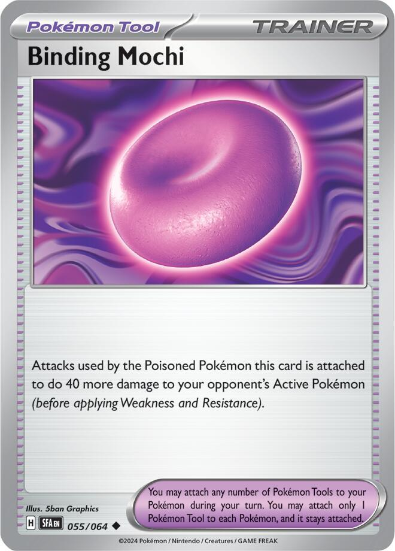
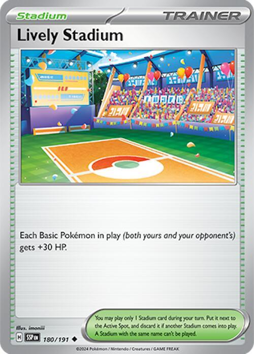

x4
x4 x4
x4 x2
x2 x2
x2 x2
x2 x3
x3 x2
x2 x4
x4 x3
x3![Boss's Orders [Ghetsis]](./assets/654453_bosss-orders-ghetsis.jpg) x2
x2 x2
x2 x4
x4 x3
x3 x2
x2 x2
x2


x3
x2 x2
x2 x10
x10 Gengar Gang: The Bill Comes Due
Gengar Gang: The Bill Comes Due 

A tournament-legal 60 that wins the Prize race by making their knockouts cost double
← back to all decksOkidogi ex is a 250 HP Basic with a Fighting Weakness in a format where Mega Lucario ex attacks for one Energy. Aura Jab does 130, Weakness doubles it to 260, and the dog dies on turn two having done nothing. Every previous version of this deck tried to fix that by making Okidogi faster. Speed was never the problem.
The fix is to stop paying for the deaths.
Mega Gengar ex's Shadowy Concealment charges the opponent one Prize for every Darkness Pokémon they knock out with a Pokémon ex. The whole top of the format attacks with ex Pokémon, so the tax applies to nearly every attack anyone makes against you.
| Your Pokémon | Prizes normally | Prizes under Concealment |
|---|---|---|
| Mega Gengar ex | 3 | 2 |
| Okidogi ex | 2 | 1 |
| Gastly, Haunter, Toxel, Toxtricity | 1 | 0 |
Look at the bottom row. Eleven of the nineteen Pokémon in this deck are worth nothing to the person attacking them. A board holding one Mega Gengar ex, two Okidogi ex, and three of anything else pays out four Prizes total. They need six.
That is the deck. Okidogi hits for 300, dies, and gets replaced, and the corpses do not add up to a win for the other player. Chain-Crazed is how you take Prizes. Shadowy Concealment is how you stop them taking theirs.
The second engine is Gengar ex, and it shares the Gastly line, so it costs two slots and nothing else. Gnawing Curse puts two damage counters on any Pokémon the opponent attaches Energy to from their hand, every time, with no cap. Risky Ruins fires on a different trigger, when they bench a Basic that is not Darkness, so the two stack. A Mega Lucario ex that started life as a benched Riolu and took two hand attachments arrives at 280 of its 340 HP, and 300 goes straight through it.
x4x4x2x2x2x3x2x4x3x2x2x4x3x2x2
x3
x2x2x10Pokémon (19)
| Qty | Card | Set | Number | Reg |
|---|---|---|---|---|
| 4 | Okidogi ex | Shrouded Fable | 036 | H |
| 4 | Gastly | Perfect Order | 048 | J |
| 2 | Haunter | Phantasmal Flames | 055 | I |
| 2 | Mega Gengar ex | Phantasmal Flames | 056 | I |
| 2 | Gengar ex | Temporal Forces | 104 | H |
| 3 | Toxel | Phantasmal Flames | 067 | I |
| 2 | Toxtricity | Phantasmal Flames | 068 | I |
Trainers (31)
| Qty | Card | Set | Number | Reg |
|---|---|---|---|---|
| 4 | Lillie's Determination | Mega Evolution | 119 | I |
| 3 | Janine's Secret Art | Shrouded Fable | 059 | H |
| 2 | Boss's Orders | Mega Evolution | 114 | I |
| 2 | Team Rocket's Petrel | Destined Rivals | 176 | I |
| 4 | Rare Candy | Mega Evolution | 125 | I |
| 3 | Energy Switch | Mega Evolution | 115 | I |
| 2 | Energy Recycler | Destined Rivals | 164 | I |
| 2 | Mega Signal | Mega Evolution | 121 | I |
| 1 | Night Stretcher | Shrouded Fable | 061 | H |
| 1 | Prime Catcher | Prismatic Evolutions | 119 | H |
| 3 | Binding Mochi | Shrouded Fable | 055 | H |
| 2 | Lively Stadium | Surging Sparks | 180 | H |
| 2 | Risky Ruins | Mega Evolution | 127 | I |
Energy (10)
| Qty | Card | Set | Number | Reg |
|---|---|---|---|---|
| 10 | Basic Darkness Energy | Mega Evolution Energies | 007 | - |
19 + 31 + 10 = 60. ✓ Eleven Basics, one ACE SPEC, nothing over four copies.


 Darkness
Darkness Fighting ×2
Fighting ×2 3
3 legal (Reg H)Poisonous Musculature - Search your deck for up to 2 Basic Darkness Energy cards and attach them to this Pokémon. Then, shuffle your deck. If you attached Energy to a Pokémon in this way, this Pokémon is now Poisoned.Chain-Crazed (130+) - If this Pokémon is Poisoned, this attack does 130 more damage.
legal (Reg H)Poisonous Musculature - Search your deck for up to 2 Basic Darkness Energy cards and attach them to this Pokémon. Then, shuffle your deck. If you attached Energy to a Pokémon in this way, this Pokémon is now Poisoned.Chain-Crazed (130+) - If this Pokémon is Poisoned, this attack does 130 more damage.250 HP Basic, Fighting Weakness, Retreat 3. Read those three numbers together, because they are the entire reason this deck is built the way it is. It cannot run away, it folds to one Fighting Energy, and it gives up two Prizes. Concealment answers the third. Nothing answers the first two, so the deck stops trying.
Chain-Crazed does 130, and 130 more if this Pokémon is Poisoned. 260 is short of every Mega in the format, which is why Binding Mochi is not optional.
Poisonous Musculature is the setup attack the old list leaned on: search two Basic Darkness Energy out of the deck, attach them here, and Poison yourself. It works, and it costs you your attack for the turn. Use it on turn one going second when there is nothing worth hitting anyway. Never use it to rearm a replacement, because Janine does that without spending the turn.
Poison persists. Once this dog is Poisoned it stays Poisoned as long as it stays Active, so Chain-Crazed keeps hitting 260 every turn afterward with no further help. You Poison each Okidogi once, not once per turn. The cost is ten damage at every Checkup, which puts a real clock on how long any one copy lives.
Four copies, because the deck's plan is for this card to die and be replaced, and because it is a Basic that carries the mulligan count.


 DarknessFighting ×21legal (Reg J)Surprise Attack (30) - Flip a coin. If tails, this attack does nothing.
DarknessFighting ×21legal (Reg J)Surprise Attack (30) - Flip a coin. If tails, this attack does nothing.70 HP keeps it inside Buddy-Buddy Poffin range if you ever add Poffin back, and it is Darkness, so Risky Ruins never touches it and Janine can attach to it. Four copies feed both Stage 2 lines.


 DarknessFighting ×21legal (Reg I)Spooky Shot (40)
DarknessFighting ×21legal (Reg I)Spooky Shot (40)The manual path to a Stage 2 when Rare Candy is gone or prized. Two copies is insurance, not a plan. Nothing in this deck wants to attack with a Haunter.
DarknessFighting ×22legal (Reg I)Void Gale (230) - Move an Energy from this Pokémon to 1 of your Benched Pokémon.Stage 2 from Haunter. 350 HP. Gives up 3 Prizes, or 2 once its own Ability applies to it.
Shadowy Concealment is the win condition. Any Darkness Pokémon of yours knocked out by an attack from an opponent's Pokémon ex costs that player one Prize. It covers your whole board including this card, and it works from the Bench.
The effect does not stack, so run one on the board and never two. A second copy in play is two more Prizes sitting in the open for no extra benefit. The second copy in the deck exists for when the first one is prized or dead.
Void Gale does 230 and moves an Energy from this Pokémon to a Benched Pokémon. That clause reads like a drawback and works like a feature, because Energy Switch pulls it right back up to whichever Okidogi needs it. Void Gale is your attack on turns when no Okidogi is ready.

 DarknessFighting ×22legal (Reg H)Tricky Steps (160) - You may move an Energy from your opponent's Active Pokémon to 1 of their Benched Pokémon.
DarknessFighting ×22legal (Reg H)Tricky Steps (160) - You may move an Energy from your opponent's Active Pokémon to 1 of their Benched Pokémon.Stage 2 from Haunter, 310 HP, and the reason the stadium slot got interesting.
Gnawing Curse puts 2 damage counters on any Pokémon your opponent attaches an Energy card from their hand to. No once-per-turn clause and no stacking restriction, so two copies on the board double the tick. Every opponent makes one manual attachment per turn, so twenty damage a turn is the floor.
It reads "from their hand," and that word does real work. Mega Lucario's Aura Jab attaches from the discard pile and Mega Gardevoir's Overflowing Wishes attaches from the deck, so neither triggers it. What always triggers is the attachment every deck makes every turn.
Tricky Steps does 160 and moves an Energy off their Active onto their Bench, which is a genuine tempo answer against anything that needs an exact Energy count to attack.
DarknessFighting ×21legal (Reg I)Call for Family - Search your deck for up to 2 Basic Pokémon and put them onto your Bench. Then, shuffle your deck.Playful Kick (20)Call for Family searches two Basic Pokémon out of the deck and benches them for one Darkness Energy. That is a Buddy-Buddy Poffin on a stick, it reaches Okidogi ex which Poffin cannot, and it is the reason no Poffin is in this list.
The third copy arrived when Pecharunt left. It holds the Basic count up and it is a zero-Prize body on the Bench, which is the job Pecharunt was really doing.
 DarknessFighting ×22legal (Reg I)Gentle Slap (100)
DarknessFighting ×22legal (Reg I)Gentle Slap (100)Sinister Surge attaches a Basic Darkness Energy from the deck to a Benched Darkness Pokémon once a turn, and puts two damage counters on it. It is an Ability, which is the whole argument for it: it accelerates on turns when your Supporter is busy being Lillie's Determination or Boss's Orders.
Point it at the Benched Okidogi ex you plan to promote next. Two damage counters on a body that dies for one Prize is a fine price for a preloaded attacker.
The Phantasmal Flames 103 print is the same card as 068 with different art. Either is legal; the deck list pins 068 because that is the one already in the box.
 legal (Reg I)
legal (Reg I)Shuffle your hand into your deck and draw six, or eight while you still hold all six Prizes. Four copies, because this is the deck's only pure draw and prizing two of them still leaves two.
legal (Reg H)The card the whole rebuild runs on. Choose up to two of your Darkness Pokémon, search a Basic Darkness Energy out of the deck for each, attach them, and if one of them was your Active, it is now Poisoned.
It searches the deck, not your hand. That matters more than it sounds. Every accelerant in this deck pulls from the deck, so Energy sitting in hand does nothing except take up a card slot, and that is why the Energy count is ten and not twelve.
The combination that replaced Pecharunt ex: promote a fresh Okidogi, attach by hand, play Janine to put one Energy on the Okidogi and one on a benched Darkness Pokémon, then Energy Switch the benched one up. Three Energy, Poisoned, swinging 300 on the turn it arrives.
Three copies is one per Okidogi that will realistically attack in a game. Poison persists, so this is a rearm tool, not a per-turn engine.
legal (Reg I)Drags a Benched Pokémon into the Active Spot, which is the only way to touch a Dragapult ex, since it takes no damage at all while it sits on their Bench.
Two copies rather than three, because Petrel fetches a third on demand. Counting Prime Catcher, the deck holds three gust cards and five ways to be holding one.
 legal (Reg I)
legal (Reg I)Search your deck for a Trainer card. This is the direct line to whatever the board actually needs, and it is the card that makes every two-of in the list behave like a three-of.
It finds the missing Binding Mochi, a Stadium when theirs is sitting on the field, the Prime Catcher that wins the turn, a Rare Candy, or the Boss's Orders that reaches their Bench. It also finds Energy Recycler, which matters more the longer a game runs.
The cost is honest: Petrel is a Supporter, so a turn spent tutoring is a turn not spent on Lillie's Determination or Janine's Secret Art. Play it on setup turns, not on the turn a fresh Okidogi needs arming.
legal (Reg I)Four, and they are not negotiable. Both Stage 2 lines grow out of Gastly through this card.
legal (Reg I)Search a Mega Evolution Pokémon ex out of your deck and put it in your hand. It costs nothing to play, and it takes the odds of finding Mega Gengar ex by turn three from 34% to 57%. The win condition has to be findable.
legal (Reg I)Moves a Basic Energy from one of your Pokémon to another. Three copies, because it does three separate jobs.
It is the third Energy on a fresh Okidogi. Janine attaches to two of your Darkness Pokémon, meaning two different ones, so it can only ever put a single Energy on your Active. A manual attachment plus Janine is two, and Chain-Crazed costs three. Energy Switch brings the last one up off the Bench.
It powers a Gengar without spending your Supporter. Sinister Surge only reaches the Bench, so Surge onto a benched body and Switch it up pays Void Gale's or Tricky Steps'
It undoes Void Gale. That attack shunts Mega Gengar's own Energy to the Bench, and this brings it back.
A Mega Gengar sitting on the Bench is itself a benched Darkness Pokémon, so Sinister Surge can load it directly and it arrives already armed. Energy Switch is for the turn it is Active and needs the second Energy now.
legal (Reg I)Shuffle up to 5 Basic Energy cards from your discard pile into your deck. It is the only card in Standard that puts Energy back where this deck's accelerants can find it, and without it the engine runs dry around turn five.
Every Okidogi that dies takes three Darkness Energy to the discard with it, and Okidogi dying is the plan, not the accident. Janine's Secret Art, Sinister Surge, and Poisonous Musculature all search the deck. Night Stretcher returns a card to your hand, so it never refills the pile those three read from.
| Buried in the discard | Left in the deck | |
|---|---|---|
| Start, 10 Energy less about one prized | 0 | 9 |
| Okidogi #1 dies holding three | 3 | 6 |
| Okidogi #2 dies holding three | 6 | 3 |
| Okidogi #3 dies holding three | 9 | 0, and Janine whiffs |
Two copies takes the deck from three fully armed Okidogi in a game to six. This is the card that used to be a one-of emergency button in the old list, and in this deck it is structural.
legal (Reg H)A Pokémon or a Basic Energy card out of the discard pile and into your hand. One copy, and it is the deck's deliberate wildcard.
Energy Recycler took over the Energy half of this job and does it better, so what is left is the half Recycler cannot do: pulling a knocked-out Mega Gengar ex back. Mega Signal only searches the deck, so once both Megas are in the discard this is the only card that reaches them, and losing Shadowy Concealment for the rest of a game loses the game.

 ACE SPEC Rarelegal (Reg H)
ACE SPEC Rarelegal (Reg H)The ACE SPEC. It gusts a Benched Pokémon up and switches your own Active for free, which is two jobs this deck needs badly in one card. With Switch cut it is also the only free rotation left, which is less of a loss than it sounds: moving Okidogi out of the Active Spot clears its Poison, dropping Chain-Crazed back to 130 until you spend another Janine on it. Maximum Belt was the alternative and it buys ten more damage than Binding Mochi while costing the Mochi slot, so it is not close.
legal (Reg H)Attacks by the Poisoned Pokémon this is attached to do 40 more damage. Okidogi ex is always Poisoned when it attacks, so this is a flat plus 40 that turns 260 into 300, and 300 is the number that separates a deck that kills things from a deck that does not.
Three copies. It is a breakpoint card, not a luxury.
 legal (Reg H)
legal (Reg H)Every Basic Pokémon in play gets +30 HP, which puts Okidogi ex at 280.
Mega Lucario's Aura Jab does 130, doubled to 260 by Fighting Weakness. At 250 the dog dies. At 280 it survives and gets one more attack off. That single point of arithmetic is the answer to the matchup that has been ending these games.
It is close to one-sided, because every attacker at the top of the format evolves: Dragapult ex and Mega Gardevoir ex are Stage 2, Mega Lucario ex and Mega Excadrill ex and N's Zoroark ex are Stage 1. None of them gain a point. The cost is Basic Mega attackers, so Mega Absol ex goes to 310 and Mega Kangaskhan ex to 330.
legal (Reg I)Two damage counters on every Basic non-Darkness Pokémon either player benches. Every Pokémon in this deck is Darkness, so it is completely one-sided.
Twenty damage on their Dreepy carries forward onto the Dragapult ex it becomes, and it is the extra twenty that Gnawing Curse alone cannot supply against Mega Gardevoir ex.
Both stadiums are maindecked because league night takes the list before the first game and nothing changes after that. Four stadium cards also takes the odds of holding one by turn three from 34% to 57%, and the reason that number matters is on Versus the Card Shop.
legalTen, and the count is deliberately lower than it looks like it should be. Poisonous Musculature, Sinister Surge, and Janine's Secret Art all search the deck, so the only Energy that ever needs to be in your hand is the one manual attachment per turn. Every extra copy drawn is a dead card in a Lillie's refresh.

Concealment is worth doing the arithmetic on, because it changes how you build your Bench.
Every Pokémon ex you bench is a hole in the tax. Keep one Mega Gengar ex on the board, at most two Okidogi ex, and fill the rest with Gastly, Toxel, and Toxtricity. The deck runs eleven of those zero-Prize bodies, so the seats fill themselves. Against an all-ex opponent that board costs them roughly two to three extra knockouts to find six Prizes, and both Fezandipiti ex and Pecharunt ex were cut for exactly this reason.

Four sources put Darkness Energy on the board, and only one of them uses your hand.
| Source | From | To | Costs |
|---|---|---|---|
| Manual attachment | hand | anywhere | your attachment for the turn |
| Sinister Surge | deck | a Benched Darkness Pokémon | nothing, it is an Ability |
| Janine's Secret Art | deck | up to 2 Darkness Pokémon, Poisons your Active | your Supporter |
| Poisonous Musculature | deck | Okidogi ex only, Poisons it | your attack |
Chain-Crazed costs three Energy, so the rearm is always some combination of the four that reaches three in a single turn. Energy Switch is the connective tissue, because two of those sources deliver to the Bench rather than to the card that needs to attack.
You can attack on your first turn when you go second, and this deck can do 300 with it.
Attach a Darkness Energy to an Active Okidogi ex. Play Janine's Secret Art, putting one Energy on the dog and one on any benched Darkness Pokémon; the dog is now Poisoned. Play Energy Switch to move the benched copy onto the dog, which now holds three. Attach Binding Mochi. Chain-Crazed for 300.
That is five specific cards, so it is not a plan you can count on. The four-card version without the Mochi still does 260, and the sequence itself is the important part, because it is the same sequence you use every time a dog dies.
This is the play that made the rebuild worth doing, and it is why neither Pecharunt is in the deck.
Your Okidogi dies. Promote the next one. Attach by hand, play Janine to put an Energy on it plus one on the Bench, Energy Switch the Bench copy up, and swing for 300. The replacement attacks on the turn it arrives, which Poisonous Musculature can never do, because Musculature is an attack and using it means not attacking.
Toxtricity makes this cheaper. If Sinister Surge has been feeding the benched dog for a turn or two, it comes up already holding Energy and Janine only owes it the Poison.

You hold both, and they want opposite things, so pick by what is across the table.

Read The Prize Tax and keep the board's payout at four. One Mega Gengar ex, never two. Two Okidogi ex at most. Everything else should be a zero.


The current Standard field is roughly a fifth Dragapult across its three variants, with Mega Excadrill, Alakazam Dudunsparce, and N's Zoroark behind it.
| Deck | The problem | The answer |
|---|---|---|
| Dragapult ex | 320 HP and it takes no damage on their Bench | Risky Ruins hits Dreepy for 20 on the way in, Gnawing Curse adds 40, and 300 goes through. Boss's Orders is how you reach it at all |
| Mega Lucario ex | Aura Jab is one Energy for 260 into your Weakness | Lively Stadium. 280 survives, and 300 answers back through 60 of chip |
| Mega Excadrill ex | 340 HP and Maximum Drilling hits for 330 | It needs five Energy, so Gnawing Curse taxes every one that comes from hand. Tricky Steps strips the Active |
| Mega Gardevoir ex | 360 HP, and Overflowing Wishes attaches from the deck, dodging the Curse | The one matchup that needs Risky Ruins specifically. Otherwise it is a two-shot |
| Slowking and other single-prize decks | Shadowy Concealment does nothing against a non-ex attacker | Your bad matchup. Use Boss's Orders on their engine rather than trying to win the race |
The list is a hypothesis; games are the data.


The planning produced more good cards than seats.
| Card | Swaps for | Play it when |
|---|---|---|
| Crobat (Shrouded Fable 029) | 2 Toxel, 2 Toxtricity, plus 3 Zubat | draw runs dry. Shadowy Envoy draws you to eight cards on any turn you played Janine's Secret Art, at zero Prizes. It is printed for this exact deck, and it is out of the list only because a third Stage 2 line cannot share four Rare Candy |
| Zubat (Shrouded Fable 027) | see above | Lead searches a Supporter card, which makes it a turn-one Janine tutor |
| Tremendous Bomb (Pitch Black 113) | a Binding Mochi | Fighting decks dominate the room. If Okidogi takes 240 or more from a Mega Evolution ex, it puts 120 damage on the attacker, and Aura Jab always clears that bar |
| Fezandipiti ex | 2 Toxel | you want the draw back. Flip the Script draws 3 after any knockout and never touches your Supporter, at the cost of a fifth Prize on the board |
| Seviper (Phantasmal Flames 062) | 2 Toxel | you want a zero-Prize attacker. 240 damage for three Energy while a Darkness Mega is in play, on a 120 HP body |
| Pecharunt (Ascended Heroes 143) | 2 Toxel | Final Chain tutors any card when it is knocked out, on a zero-Prize body. It was in the list until Petrel arrived; the trouble is that it fires only when your opponent chooses to attack it, and a good one will not |
| Switch | flex | Okidogi has Retreat 3, so this reads essential and is not. Switching it out clears its Poison, so the rescue costs you the 130 damage you were rescuing |
| Maximum Belt | Prime Catcher | never, and the reason is in Prime Catcher |
| Ultra Ball | flex | most lists run it. This one does not, because the discard cost fights every card in the deck that wants to be held |
| Team Rocket's Watchtower | a Risky Ruins | the room is full of Dudunsparce. Colorless Pokémon lose their Abilities, and nothing here is Colorless |
Three cards were considered and rejected outright. Jamming Tower switches off this deck's own Binding Mochi. Battle Cage blocks your own Gnawing Curse on their Bench, because the Curse places damage counters through an Ability. Neutralization Zone would make every non-ex Pokémon here immune to attacks from Pokémon ex, which is close to perfect, and it is an ACE SPEC stadium, so it costs Prime Catcher.

Own counts are live from the collection database. The Rare Candy, Boss's Orders, Lillie's, and Night Stretcher rows are shared with the other sleeved decks, so check the box before ordering.
| Card | Own | Need | Buy | Note |
|---|---|---|---|---|
| 0 | 4 | 4 | the core; NOT the 082 or 090 illustration prints |
| 4 | 4 | ✓ | Darkness, feeds both Stage 2 lines |
| 2 | 2 | ✓ | the non-Candy path |
| 3 | 2 | ✓ | Shadowy Concealment; one on the board, never two |
| 2 | 2 | ✓ | Gnawing Curse |
| 2 | 3 | 1 | Call for Family, and the Basic count |
| 2 | 2 | ✓ | Sinister Surge; 103 is the same card |
| 11 | 4 | ✓ | shared |
| 2 | 3 | 1 | the rearm |
| 10 | 2 | ✓ | shared; printed Boss's Orders [Ghetsis] |
| 1 | 2 | 1 | the direct line; any Trainer in the deck |
| 10 | 4 | ✓ | shared |
| 1 | 2 | 1 | finds Mega Gengar ex |
| 2 | 3 | 1 | three jobs; the 3rd Energy, the Gengar ferry, and Void Gale |
| 0 | 2 | 2 | the fuel line; 5 Basic Energy from the discard back into the deck |
| 10 | 1 | ✓ | shared; the wildcard, and the only way back to a dead Mega Gengar ex |
| 1 | 1 | ✓ | ACE SPEC; the English print |
| 0 | 3 | 3 | the 260 to 300 breakpoint |
| 0 | 2 | 2 | Okidogi to 280 |
| 4 | 2 | ✓ | one-sided; every Pokémon here is Darkness |
| Basic Darkness Energy MEE: Mega Evolution Energies 7 | 38 | 10 | ✓ | never rotates |
| Total to buy | 16 |